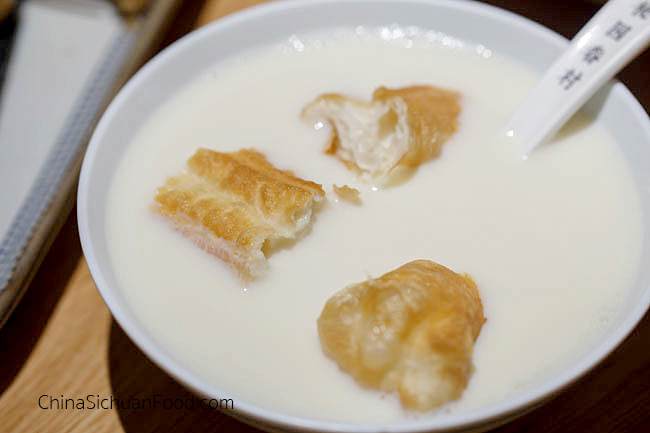
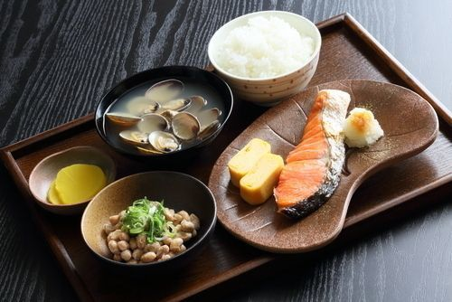

Welcome to the world of breakfast
There are thounsands of breakfasts around the world. Having a good meal at the beggining of a day is important to start a day off good.
We have a list of breakfast from 3 different countries. Let's learn about it! Check out more here.
American

American breakfast often consists of either a cereal-based dish or egg-based dish.
However, pancakes, waffles,toast, and variants of the full breakfast and continental breakfast are also prevalent.
Some popular breakfast foods are:
- Bagel and cream cheese
- Cereal
- Doughnut
- Hash browns
- Toast
Chinese
Chinese breakfast is very different from Western breakfast, but it provide wide options from rice porridge to Youtiao, from steamed buns to baked buns, from fresh soy milk to soups. Here's how your start a day with a comforting Chinese breakfast meal.
Some popular breakfast foods are:
- Soy milk and you tiao 1
- Steamed buns 2
- Wonton
- Noodles
*About the food:
- Youtiao
- Youtiao is a deep-fried flour stick is additive, crispy, full of aroma and unhealthy.
- Pan-fried soup buns
- Pan-fried soup buns (生煎包), a top star in Shanghai, is extremely popular because of the juicy and tender filling and chewy wrapper
Japanese
What Japanese call breakfast would be considered more like lunch for Westerners. A typical Japanese breakfast consists of rice, miso soup, fermented soybeans (natto), grilled fish, some pickled vegetables and a small salad.
Some popular breakfast foods are:
- Fish, natto, rice & miso soup
- Onigiri *the rice ball with seaweed
- Coffee & Toast